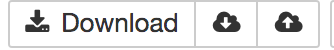
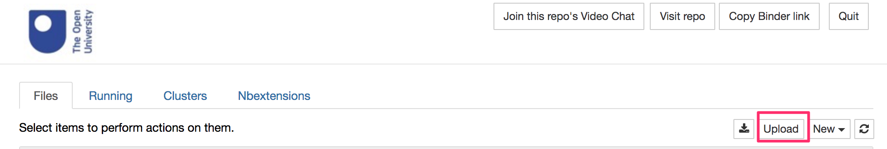

Accessing RoboLab Online - MyBinder / BinderHub¶
You can run the RoboLab environment online using the MyBinder service  .
.
If you want to save any of the notebooks used there, you will have to download them as follows:
as a single notebook from the notebook page
Filemenu;as a zipped archive file of all notebooks using the the download button on the notebook homepage.
You can also upload your own notebooks from the notebook homepage either individually, or as a zip file. If you upload a zip file, you will need to unzip it. You can do this from a notebook command cell using the unzip shell command or using Python code. More details can be found in the TO DO?? - see the ``RoboLab Environment FAQ``
The environment launched from MyBinder is ephemeral - it is created on demand when you click a launch binder button and is destroyed after a short period of inactivity.
To save your work when working on MyBinder, there are two approaches you can take:
using browser storage;
downloading and uploading files.
Using Browser Storage¶
When running a notebook in MyBinder, on the toolbar you will see a group of three icons:

The cloud buttons with the up and down arrows can be used to save the current notebook using your web browser’s file storage mechanism.
Click the cloud with the down arrow (Save to browser storage) to save a copy of the notebook in your browser’s file store. Note that you can do this even if the MyBinder session has timed out, as long as you can see the notebook in your browser.
If you create another MyBinder session at a later time, and open a notebook from the notebook home page, if you remember previously having saved that notebook to notebook storage, you can press the cloud button with the up arrow (Restore from browser storage) to replace the copy of the notebook provided by MyBinder by default with the copy you previously saved.
This is a little bit clunky, and means you have to remember that you saved a notebook to browser storage, but it works!
Note also that you save the file to the storage associated with a particular browser. If you save a notebook when using a Firefox browser, the files will not be available if you later visit MyBinder using Chrome.
TO CHECK: does file storage synch across logged in instances of Chrome?
Downloading and Uploading Files¶
Another way of saving files is to download them to your own computer desktop and then upload then when you want to work on them again. The Download button will download the current notebook to you desktop. You can then upload a notebook saved to your desktop using the Upload button on the notebook server home page.

The “down” arrow button on the top right-hand side notebook homepage will zip and download all the files in the notebook listing, including all the files in any subdirectories / subfolders.
Alternatively, if you check a single file from the notebook homepage, you can choose to selectively download just that file by clicking the Download button from that is displayed when you check the item.